GIS that makes the overlooked undeniable.
Real maps, real data, real people who needed someone to notice. New ones posted here roughly every week.
Every Map Is Wrong
Twenty map projections, from ancient star charts to the map the UN just endorsed: what each one gets right, what it gives up, and why someone thought that trade was worth it.
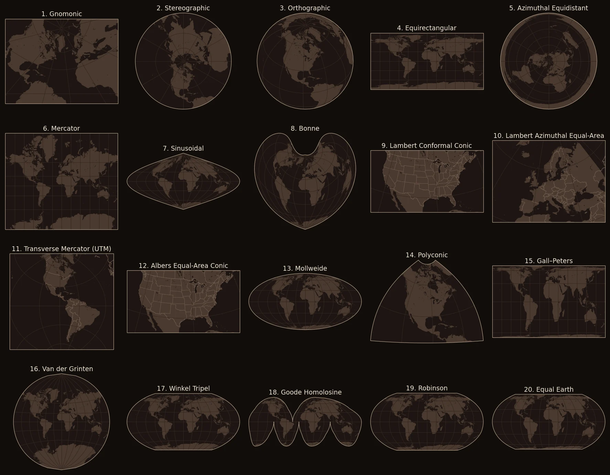
On September 4, 2026, the United Nations General Assembly voted 164 to 1 to ask the world to change its maps. The resolution, nicknamed "Correct the map," encourages governments, schools and tech companies to use the Equal Earth projection and other equal-area maps, and to teach the limitations of any flat map. It doesn't ban anything. But it's a sign that a question cartographers have argued about for 450 years has gone mainstream: how should you flatten a round planet?
The short answer is that you can't, at least not without breaking something. Every flat map of the world is wrong. The interesting part is how each one is wrong, and why somebody decided that particular kind of wrong was worth it.
This post covers what a map projection is, why the choice matters (including in everyday GIS work), and then twenty projections from ancient star charts to 2018. Each gets its own map, a measurement of how much it distorts the world, and the story of who made it and what problem they were trying to solve.
Why you can't flatten a globe
Try peeling an orange and pressing the peel flat on a table. It tears, or it stretches, or it bunches up. You can't make it lie flat without one of those things happening.
The Earth has the same problem, and mathematicians proved it. Leonhard Euler showed in 1777 that a sphere can't be flattened onto a plane without distortion. Fifty years later, Carl Friedrich Gauss proved something deeper: no flat map can keep every distance true, not even if you shrink everything evenly. One consequence is that no map can keep both the sizes of places and their shapes correct at the same time.
A map projection is a recipe for doing the flattening anyway. It's a set of rules that turns every latitude and longitude on the globe into an x and y on a flat surface. Since something has to give, each recipe chooses what to protect and what to sacrifice.
What a map can protect
There are four things a map might try to get right:
- Shape. Small areas look the way they really do, and angles are true. Maps that do this are called conformal. Navigators love them, because a compass bearing on the map is the real compass bearing.
- Area. Every region is shown at the correct size relative to every other region. These are equal-area maps. If you want to compare how big countries are, or how much forest a continent has, you need one of these.
- Distance. Distances are true, but only from one point or along certain lines. No map gets every distance right. These are equidistant maps.
- Direction. Directions from the center point are true. These are azimuthal maps.
No map can be both conformal and equal-area. That's the big trade. Many famous world maps choose neither, and spread smaller errors around everywhere instead. Those are called compromise projections, and they're usually picked because they look right.
How to read the maps below
In 1859 a French mathematician named Nicolas Auguste Tissot came up with a clever way to see distortion. Draw identical small circles all over the globe, then project them. On the map, each circle turns into an ellipse, and the shape and size of that ellipse tell you exactly how the map is distorting things at that spot. These are called Tissot's indicatrices.
Every map below has them in coral. Each one started as a circle the same size on the globe (500 km across on the world maps, 150 km on the regional ones). So:
- Circles that stay round but change size mean the map keeps shapes but not areas.
- Circles that stay the same size but get squashed mean the map keeps areas but not shapes.
- Circles that both grow and squash mean it's a compromise.
Each map also gets three numbers, measured at about 28,000 evenly spaced points on land:
- Area range: how many times more the most-inflated land is blown up than the least-inflated land. 1.0 means equal-area.
- Shape distortion: the typical bend in angles, in degrees. 0° means conformal.
- Greenland check: how many times too big Greenland looks next to Africa. 1.0 is honest. In real life, Africa is about 14 times larger than Greenland.
Why this matters, even if you never draw a map
You use a map projection every time you open a map app. Google Maps launched in 2005 on what's now called Web Mercator, and almost every web map since has followed. It was chosen for practical reasons: north is always straight up, the world fits neatly into square tiles, and the math is fast. To keep the map square, it simply cuts off everything beyond about 85° north and south.
Web Mercator is fine for finding a coffee shop. It's terrible for measuring area. Because it inflates everything away from the equator, a county in the Chicago area measured in Web Mercator comes out about 80% bigger than it really is. Every GIS analyst learns this the hard way at least once: the projection your data is in quietly changes the answers you get. (Web Mercator isn't even quite the same as Mercator. It uses a shortcut that puts features up to 43 km off on the map compared to true Mercator, which is why the US National Geospatial-Intelligence Agency issued an advisory warning about it in 2014.)
Projections also carry politics. Mercator's map makes Europe and North America look huge and Africa look small, which is exactly what the 2026 UN resolution was about. Nobody designed it that way to make a point, as you'll see below. But the map you grow up with shapes your sense of how big places are.
How many projections are there?
Nobody knows exactly, because there's no limit. John Snyder, whose US Geological Survey manuals are the standard references on the subject, put it this way: "the number of ways in which that distortion can be handled is infinite." His 1989 Album of Map Projections mentions "the hundreds of known projection systems" and only had room to show about 90 of them.
What we can count is what GIS software actually offers. PROJ, the open-source library that does the math inside QGIS, GDAL, PostGIS and Python's mapping tools, implements 155 different projection methods (as of version 9.5). On top of that, the EPSG registry, the standard catalog GIS software uses, defines 5,291 ready-made projected coordinate systems: projections with specific settings attached for specific places and purposes. 50 of them are valid for downtown Chicago alone.
The twenty below are the ones with the best stories, and most of the ones you'll actually run into.
Projection, datum, coordinate system: where WGS 84 fits
If you've worked with GIS data, you've probably heard someone say their data is "in WGS 84." WGS 84 is one of the most important names in mapping, but it isn't a projection. It's a datum.
- A datum is a model of the Earth's shape (a slightly squashed sphere, called an ellipsoid) plus the rules for where latitude and longitude sit on it. WGS 84 is maintained by the US National Geospatial-Intelligence Agency, and it's the reference system for GPS. GPS positions come out in WGS 84.
- A projection is the recipe for flattening that latitude and longitude onto a map, which is what this post is about.
- A coordinate reference system bundles the two together, along with units like meters or feet. Each one has an ID number in the EPSG registry, and that number is what you actually pick in GIS software.
When people say data is "in WGS 84," they usually mean EPSG:4326: plain latitude and longitude on the WGS 84 datum, with no projection at all. That's how a lot of data gets stored and shared. When software draws it on screen without projecting it, you get the simple grid of the equirectangular map, #4 below.
The coordinate systems you'll actually meet
| EPSG code | Name | What it is | Typical use |
|---|---|---|---|
| 4326 | WGS 84 | Latitude and longitude, no projection | Storing and sharing data, GPS |
| 3857 | WGS 84 / Pseudo-Mercator | Web Mercator (#6's web cousin) | Web map tiles: Google, OpenStreetMap, nearly every map app |
| 32616 | WGS 84 / UTM zone 16N | Transverse Mercator (#11) | Accurate local distances and areas around Chicago |
| 3435 | NAD83 / Illinois East (ftUS) | Transverse Mercator (#11), in US feet | Local government, surveying and engineering in eastern Illinois |
| 5070 | NAD83 / Conus Albers | Albers (#12) | Comparing areas across the lower 48 states |
| 3035 | ETRS89-extended / LAEA Europe | Lambert Azimuthal Equal-Area (#10) | European Union statistics |
| 8857 | WGS 84 / Equal Earth Greenwich | Equal Earth (#20) | World maps where size matters |
Two details are worth noticing. The registry's official name for Web Mercator is "Pseudo-Mercator," which tells you what the people who maintain it think of it. And Illinois's State Plane zones use Transverse Mercator rather than Lambert Conformal Conic, because Illinois is tall and narrow. You'll see why in entries #9 and #11.
Loading the map…
The twenty projections
They're in date order, from star charts drawn more than 2,000 years ago to a map designed in 2018.
1Gnomonic
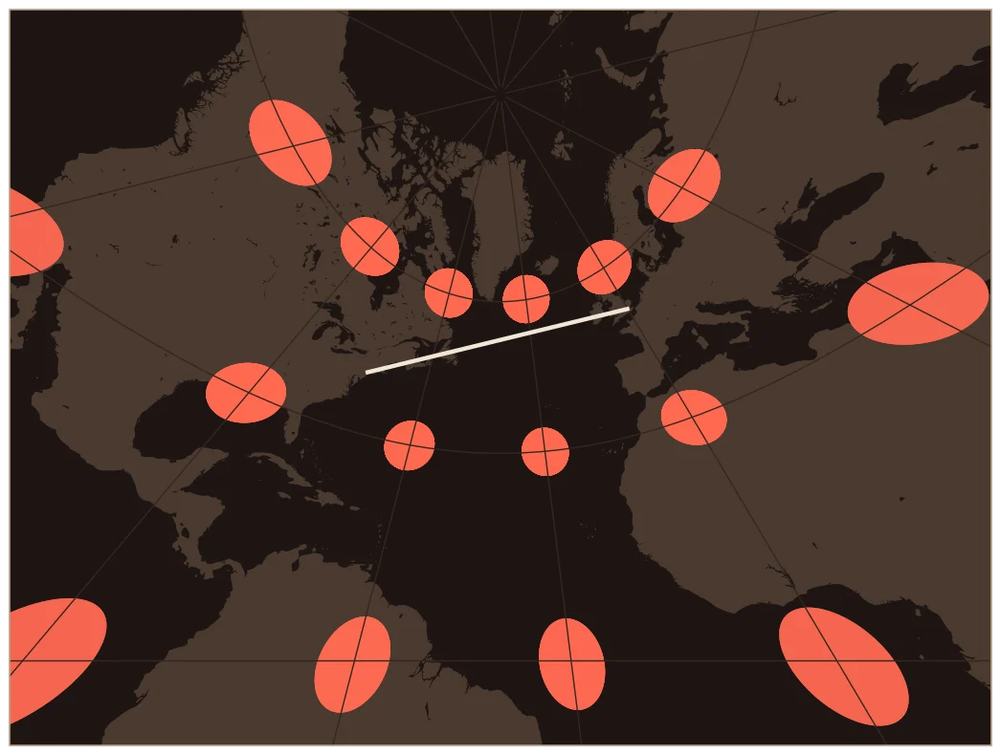
Tradition credits Thales of Miletus with using this projection for star maps, though nothing he wrote about it survives. Picture a light at the very center of a glass globe, shining the coastlines onto a flat sheet touching the surface. For centuries it was mostly a tool for designing sundials, and it was called the "horologium." The lines of a sundial for a given latitude match the meridians on a gnomonic map centered there.
Its one superpower is rare and useful: every straight line on a gnomonic map is a great circle, the shortest path between two points on the globe. The line from New York to London on the map below is the route a plane would actually fly. Navigators drew their route on a gnomonic chart, then transferred it to a Mercator chart to work out compass headings. The price is that it can't show even half the world, and distortion explodes toward the edges.
2Stereographic
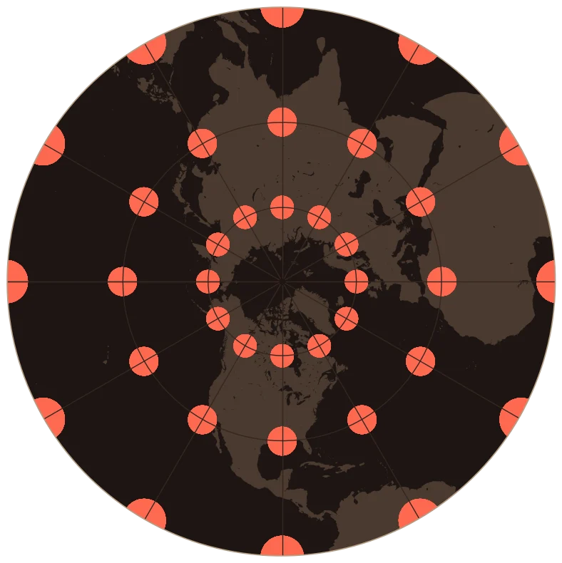
The stereographic projection is often credited to the Greek astronomer Hipparchus, though the oldest surviving text about it is Ptolemy's Planisphaerium, written about 300 years later. Its first big job was the astrolabe, the handheld star computer used by astronomers and sailors for centuries. It works for that because it maps every circle on the sky to a circle on the flat plate.
It's also conformal: shapes are correct in any small area. In fact, it's the only perspective projection (one you could make with a light and a screen) that keeps shapes right. Today it maps the poles, where the military's Universal Polar Stereographic grid takes over from UTM north of 84°N and south of 80°S.
3Orthographic
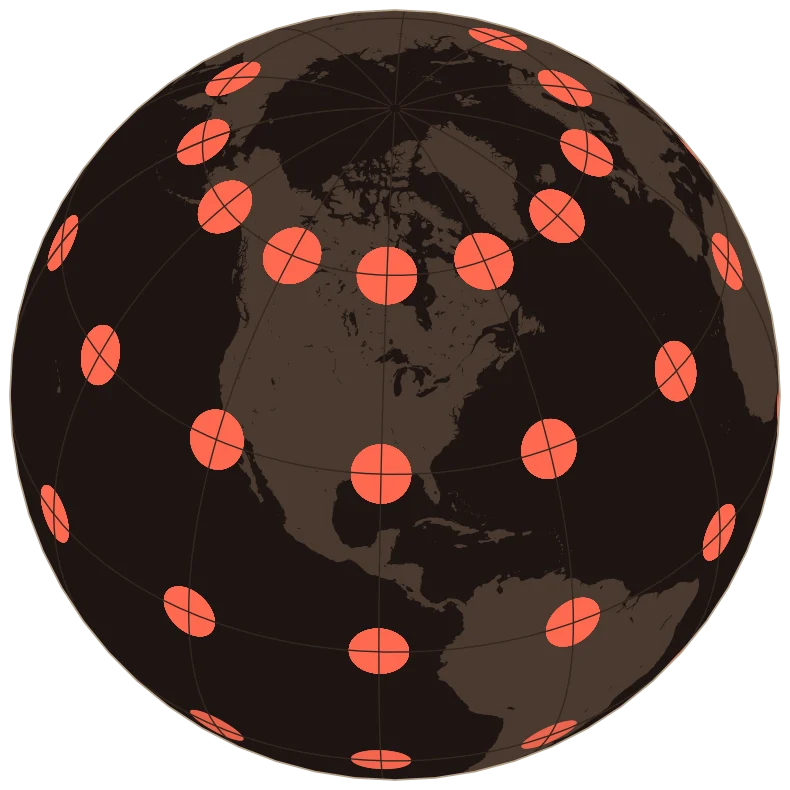
The orthographic projection is how the Earth looks from very far away: one hemisphere, curving away at the edges like a globe. Hipparchus is said to have used it for astronomical calculations, and the Egyptians may have known it before him. Early writers called it the "analemma." The name "orthographic" came in 1613.
It doesn't preserve area, shape or distance. It just looks real, which is its whole point. During World War II, the illustrator Richard Edes Harrison drew striking orthographic "global" maps for the American public. Ours is centered on Chicago.
4Equirectangular (Plate Carrée)
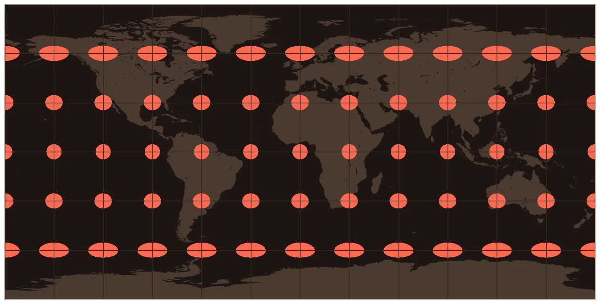
Draw latitude and longitude as a plain square grid and you have the equirectangular projection. Ptolemy credited Marinus of Tyre with it around AD 100, and Snyder thought it might go back to Eratosthenes three centuries earlier. Marinus's version wasn't quite square, though, and Ptolemy wasn't impressed. He called it "a manner of representing the distances which gives the worst results of all."
It survives because it's simple. Sixteenth-century sailors used it as their "plane chart" until Mercator's map caught on. Today it's the default for global satellite imagery and climate data, since every pixel lines up directly with a latitude and longitude. If you've ever plotted raw GPS coordinates without choosing a projection, this is the map you made.
5Azimuthal Equidistant
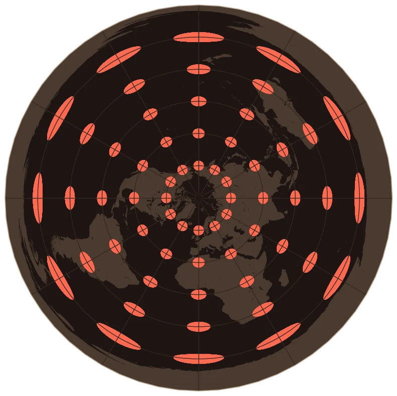
On this map, the distance and direction from the center point to anywhere else on Earth are both exactly right. It may go back to Egyptian star charts. The oldest one that survives is a 1426 star map by Conrad of Dyffenbach, and Mercator put it in the polar corners of his famous 1569 map.
You've seen it on the United Nations emblem, which shows the world as an azimuthal equidistant map centered on the North Pole. It was designed in 1945, and that's the version shown here. Aviation-era maps used it centered on a single city, to show true distances from there to everywhere else. The far side of the world gets stretched into a ring around the edge, which is why Antarctica looks like a circular wall.
6Mercator
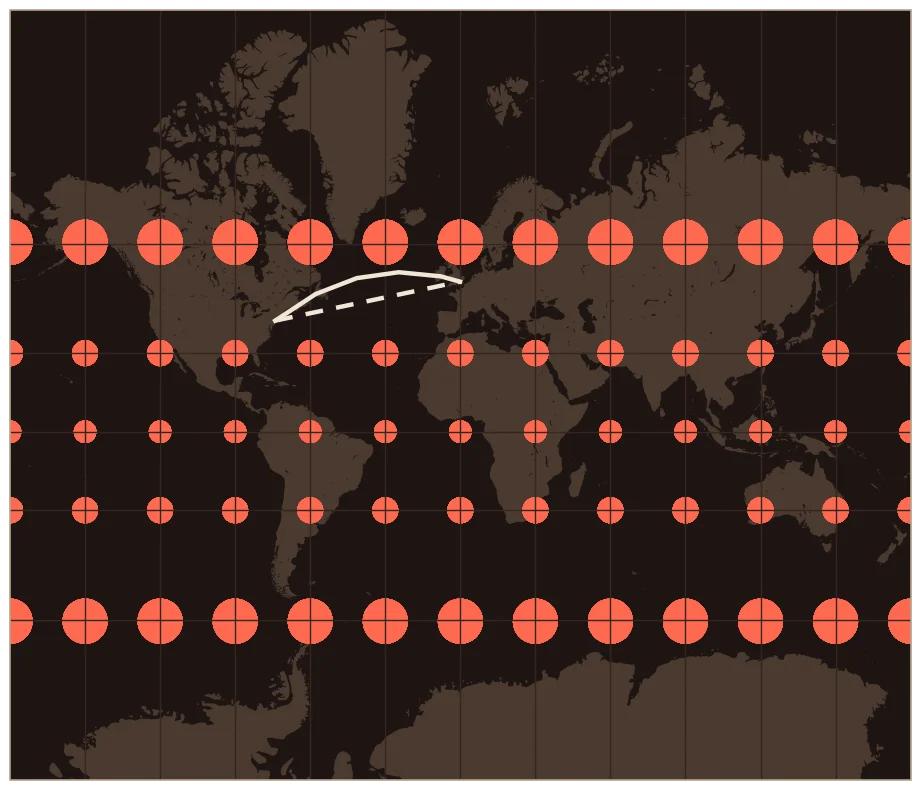
Gerardus Mercator's 1569 world map has a long Latin title that ends, roughly, "corrected for use in navigation." That was the point. On his map, a line of constant compass heading (a rhumb line) is straight. A sailor could draw a line from port to port, read the angle, and steer that heading the whole way. To make that work, Mercator had to stretch the map north and south more and more toward the poles, which is why the poles never appear at all.
Mercator probably spaced his latitude lines by hand, since the math tables he needed didn't exist yet. The Englishman Edward Wright published the exact numbers in 1599. On the map below, the dashed line from New York to London is the constant heading, and the solid line is the actual shortest route. Notice how the circles stay round but balloon toward the poles.
Using it for general world maps was, in one historian's words, "a use unintended by Mercator." It's still the standard for nautical charts, which is what it was built for. The trouble came when publishers hung it on classroom walls. On Mercator, Greenland looks slightly bigger than Africa, which is 14 times its size.
7Sinusoidal
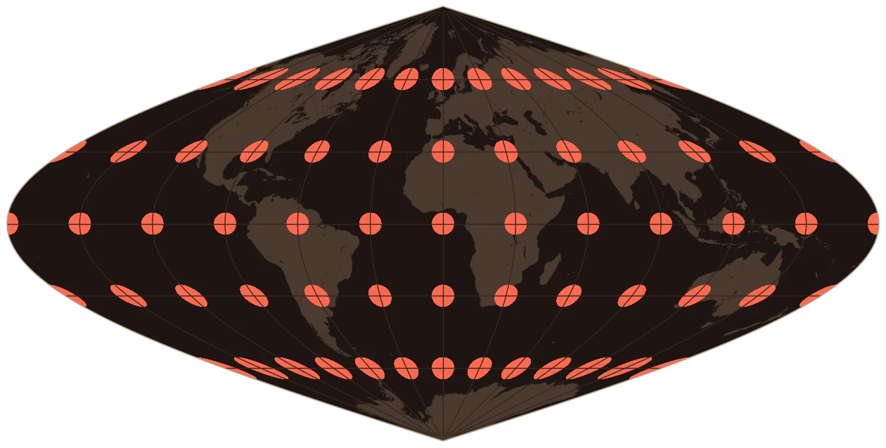
Nobody knows who invented the sinusoidal projection. The earliest map that uses it is a 1570 world map by Jean Cossin of Dieppe. It's been named after two later users, Nicolas Sanson and John Flamsteed, neither of whom created it, and it was even called "Mercator Equal-Area" after appearing in editions of Mercator's atlas.
The idea is beautifully simple. Every line of latitude is drawn at its true length, so the map gets narrower toward the poles and areas come out exactly right. The cost is shape: the far edges of the map are badly sheared. It's still at work today. NASA stores most of its high-resolution MODIS satellite land data on a sinusoidal grid, because equal-area tiles make global statistics simpler.
8Bonne
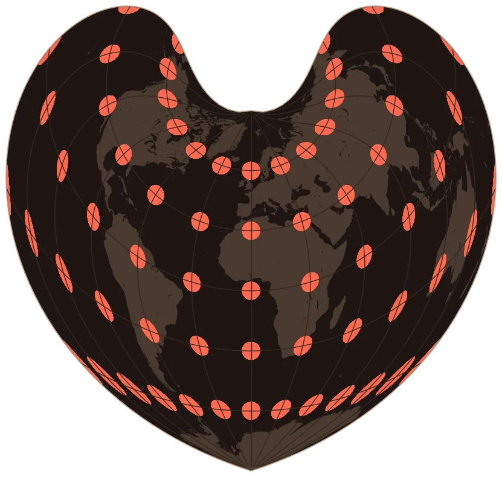
This one is named for Rigobert Bonne, a French cartographer who used it for a 1752 atlas of the French coast, but its ideas go back to Ptolemy. Its ancestor is the heart-shaped Werner projection from around 1514. Bonne's version centers the map on the area being drawn, which keeps that area accurate.
The lines of latitude are arcs of circles, all at their true length, and areas are exactly right. France's topographic maps switched to it in 1803, and atlases used it for maps of individual continents into the 20th century. Shown as a whole world, it becomes a heart.
9Lambert Conformal Conic
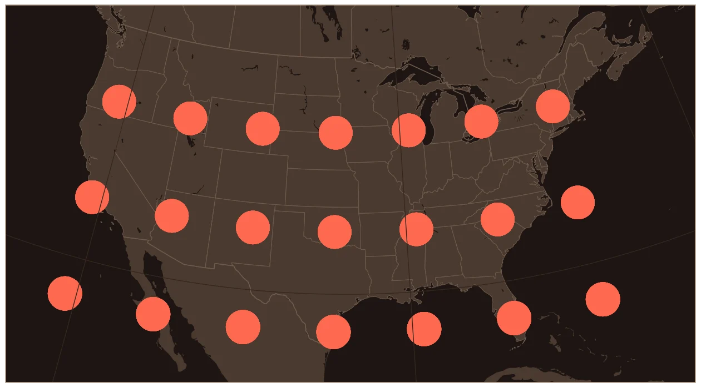
In 1772 the mathematician Johann Heinrich Lambert published seven new projections in a single work, and three of them are in this list. This was the first. Lambert was curious whether the stereographic and the Mercator, which look nothing alike, were really two ends of one family of shape-preserving maps. They are, and this projection sits in between.
Then it sat almost unused for 140 years. The French used a version of it for battle maps in World War I, and the US Coast and Geodetic Survey revived it in 1918. Today it's everywhere. US aeronautical charts use it, so do many State Plane zones (the official coordinate systems for each US state), and it's ideal for regions that are wider east to west than north to south.
measured over the lower 48
10Lambert Azimuthal Equal-Area
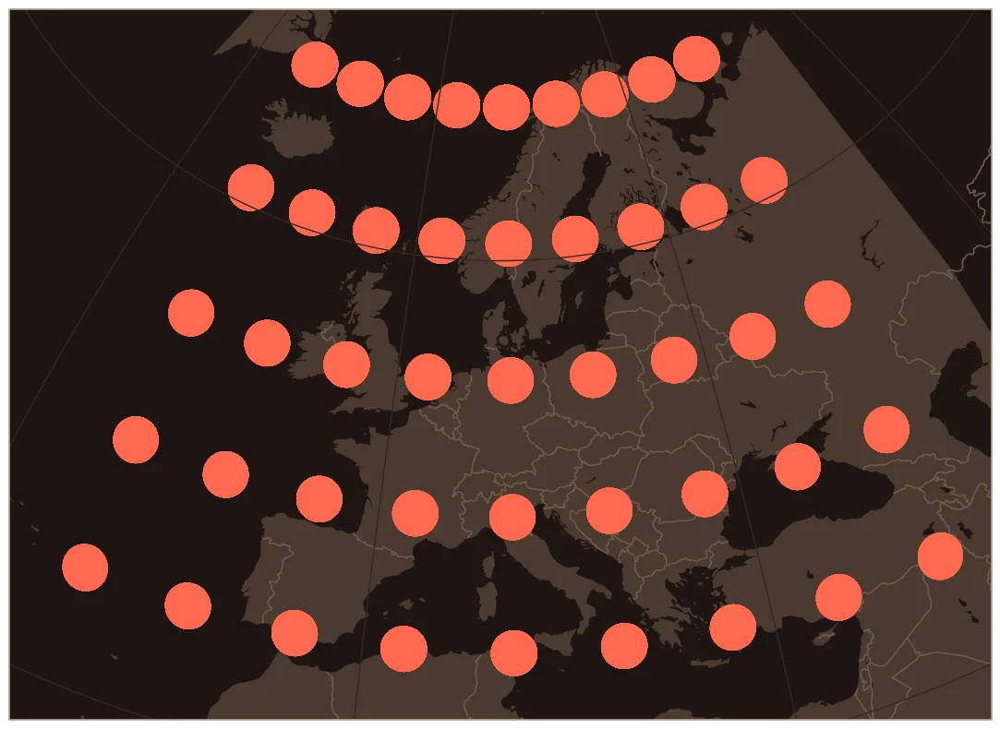
The last major projection in Lambert's 1772 book keeps areas exactly right while keeping directions from the center true. Of the classic azimuthal maps, it's the one whose scale changes least as you move away from the center.
It's the official map of European statistics. The European Union's standard grid for comparing data across countries, known as EPSG:3035, is a Lambert azimuthal equal-area projection centered at 52°N, 10°E, in northern Germany. If you've seen EU maps of population or land use, there's a good chance they were drawn on it. GIS people can spot its coordinates by their oddly familiar offsets: 4,321,000 and 3,210,000 meters.
measured over Europe
11Transverse Mercator (UTM)
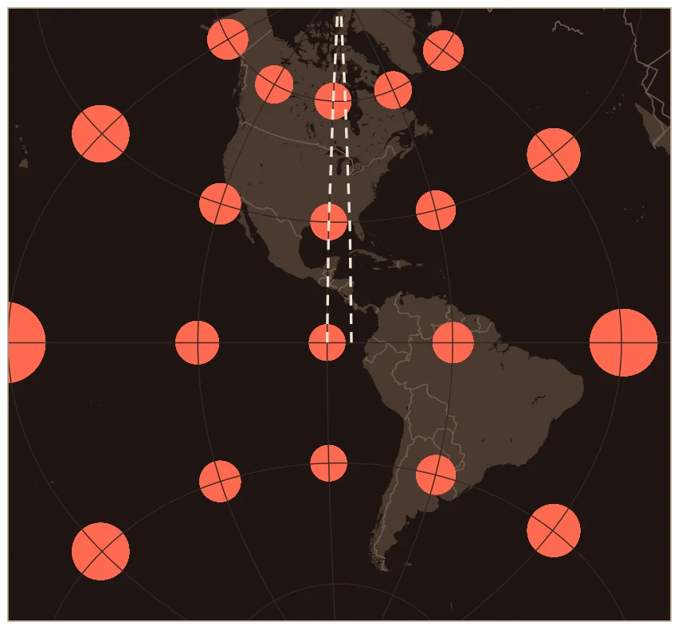
Take Mercator, turn it on its side, and you get the transverse Mercator. Lambert described it in the same 1772 book. Mercator is most accurate along the equator. The transverse version is most accurate along one north-south line, so it works brilliantly for a narrow north-south strip.
The 1911 Encyclopaedia Britannica left it out as "seldom used." Then Gauss and later Louis Krüger worked out the precise math for the real, slightly squashed Earth, and in 1947 the US Army built the Universal Transverse Mercator (UTM) system on it: 60 zones, each 6° wide, covering the world from 84°N to 80°S. Snyder called it probably the most-used projection of all for precise mapping. The USGS's current US Topo maps use it. The dashed lines here mark UTM zone 16, the zone Chicago is in. Inside the strip, distortion is tiny. Outside it, the circles start to swell.
measured inside UTM zone 16
12Albers Equal-Area Conic
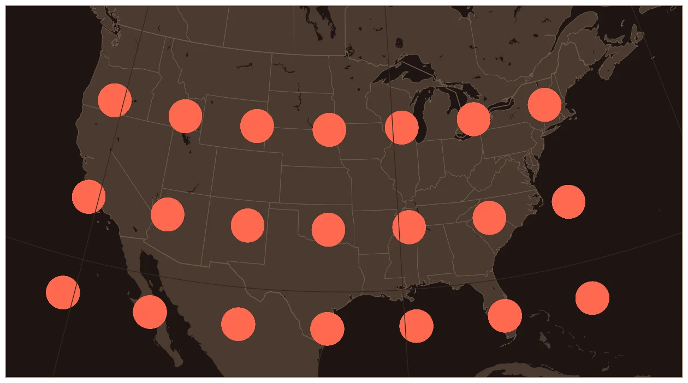
Heinrich Christian Albers, a German, published this projection in 1805. It's built for regions in the middle latitudes that are wide east to west, which describes the United States almost perfectly.
The US Coast and Geodetic Survey's Oscar Adams promoted it in 1927, calling it "as good as any other and in many respects superior to all others." The USGS adopted it for national maps, and today's standard version for the lower 48 (EPSG:5070) is what you're looking at. If you've seen a map of the US where the northern border curves gently, that's probably Albers. It's the right choice whenever you're comparing areas across states, like acres of farmland or forest cover.
measured over the lower 48
13Mollweide
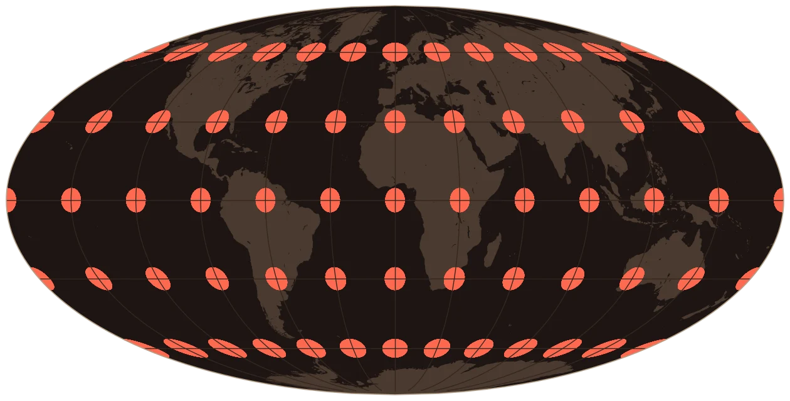
Carl Mollweide, a mathematician in Halle, published this in 1805, the same year as Albers. It fits the whole world into an ellipse while keeping every area correct. It went mostly unnoticed until the French physicist Jacques Babinet revived it in 1857.
Astronomers love it. NASA's famous maps of the cosmic microwave background, the afterglow of the Big Bang, use Mollweide, because an equal-area map is the fair way to show a whole sky. It also inspired several later projections on this list, including Goode's.
14Polyconic
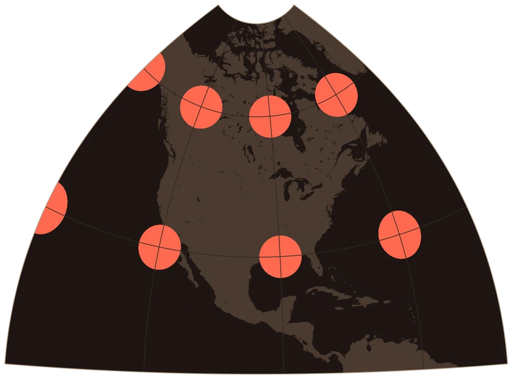
Ferdinand Hassler, the first head of the US Survey of the Coast, began promoting this projection around 1820 for one huge job: mapping the American coastline. His idea was to treat each line of latitude as the edge of its own cone. Each map sheet could then be built from simple tables, and every sheet would be accurate near its own center.
It worked well enough that the US Geological Survey used it for its topographic maps from the 1880s until the late 1950s. Hassler himself died in 1843 after a fall while trying to protect his instruments in a storm. The projection's weakness shows up when you stretch one version too far. A 1928 USGS manual warned that it was "not at all suitable for a single-sheet map of the United States," even though people did it anyway, as the curved edges here show.
measured over North America
15Gall-Peters
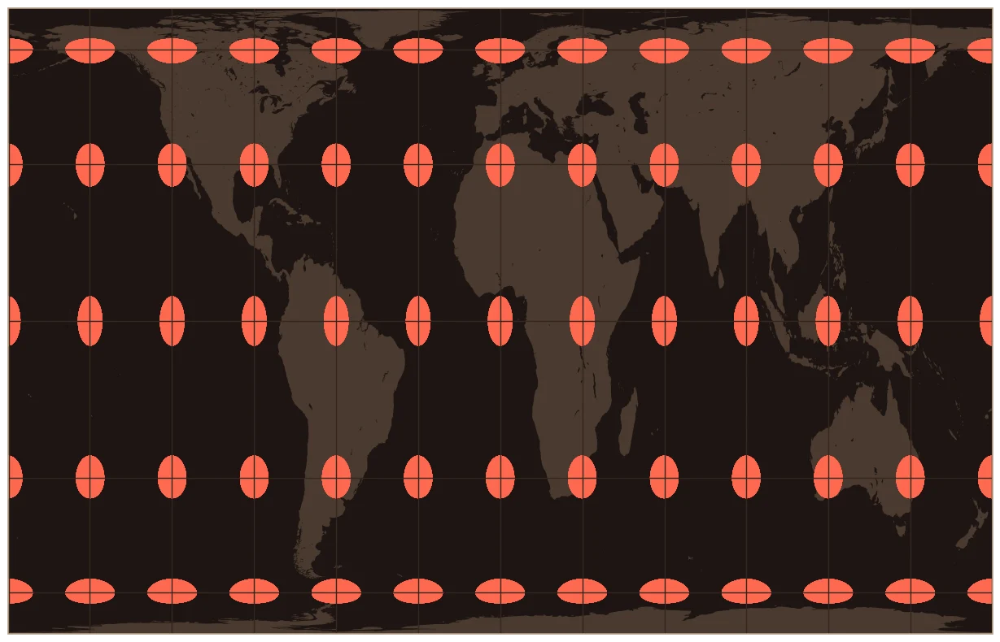
In 1855, a Scottish minister named James Gall presented an equal-area world map with tall, stretched-looking continents. He published it properly in 1885. It got little attention.
In 1973, the German historian Arno Peters called a press conference in Bonn to announce what he presented as a revolutionary new map, the fairest picture of the world, which showed the global south at its true size instead of Mercator's shrunken version. It was essentially Gall's projection. Cartographers objected. They pointed out that it wasn't new and that it distorts shapes about as badly as Mercator distorts sizes. Peters's map caught on anyway. In 1989 a group of North American geography organizations, National Geographic among them, urged publishers to stop using rectangular world maps altogether, Mercator and Peters. In 2017, Boston Public Schools switched to Gall-Peters maps, and the news coverage led directly to the last projection on this list.
16Van der Grinten
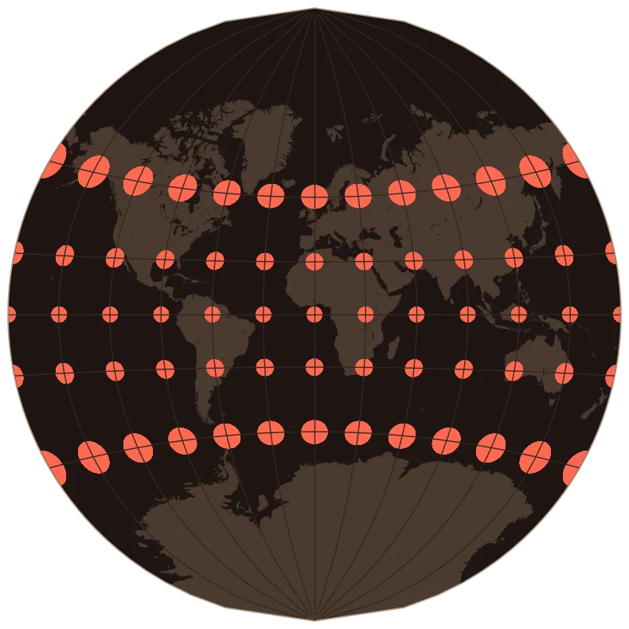
Alphons van der Grinten was a Chicagoan. He invented this projection in 1898 and patented it in 1904, aiming to blend the familiar look of Mercator with the rounded edges of Mollweide. The whole world fits inside a circle.
National Geographic made it the standard for its world maps in 1922, according to the Society itself (Snyder's manual says 1943), and kept it until 1988. That's a lot of classroom walls. The catch is the polar regions. When National Geographic finally dropped it, the Society said its Van der Grinten maps showed Greenland 554% too large.
17Winkel Tripel
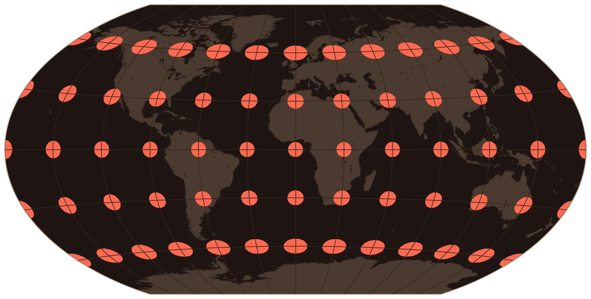
The German cartographer Oswald Winkel created this in 1921 by averaging two other projections. "Tripel" isn't a person. It's German for "triple," usually explained as an effort to keep three kinds of distortion (area, direction and distance) all low at once instead of eliminating just one.
National Geographic began using it in the mid-1990s and made it the standard for its world maps by 1998, replacing Robinson. A 2007 study by the astrophysicists David Goldberg and J. Richard Gott, which scored world maps on several kinds of error, found that Winkel Tripel "has low distortion on most measures and excellent quality overall." Its poles are drawn as lines, and the edges curve gently, which most people find natural-looking.
18Goode Homolosine
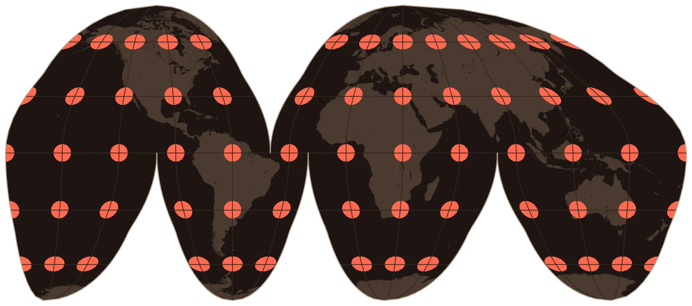
J. Paul Goode, a geography professor at the University of Chicago, took the orange-peel problem literally. If you have to tear the peel to flatten it, why not choose where to tear? In 1923 he joined the sinusoidal projection (good near the equator) to the Mollweide (good at higher latitudes) where their scales match, and cut the result along the oceans so each continent gets its own center line.
The result is an equal-area map where the continents keep their shapes remarkably well, at the cost of the oceans being sliced apart. ("Homolosine" combines homolographic, an old name for Mollweide, with sine.) It also anchored Goode's World Atlas for Rand McNally, and it was the most-used equal-area world map in American textbooks from 1940 to 1960.
19Robinson
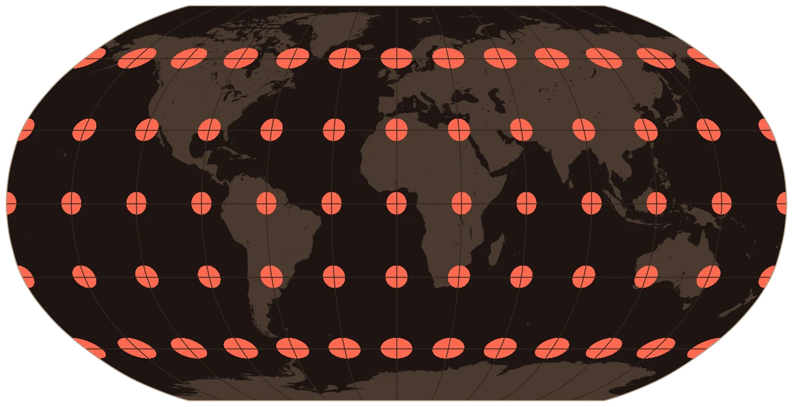
In 1963 the map company Rand McNally asked Arthur Robinson, a geography professor at the University of Wisconsin, for a world map that simply looked right. He did something unusual. Instead of deriving it from a mathematical formula, he defined it with a table of coordinates, chosen so that the shapes and sizes looked right. He called it "orthophanic," meaning "right-appearing."
In 1988 National Geographic's cartographers reviewed twenty candidates and unanimously chose Robinson to replace Van der Grinten, cutting Greenland's exaggeration from 554% to 60%. Robinson was no stranger to big maps. During World War II, he had run the map division of the Office of Strategic Services.
20Equal Earth
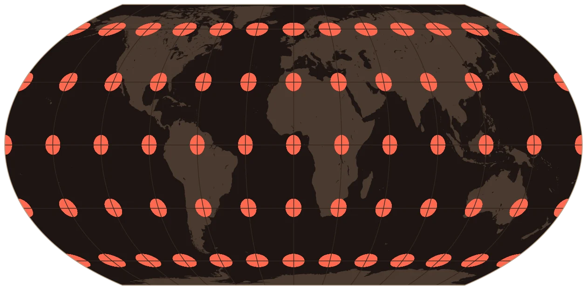
When Boston's schools adopted Gall-Peters in 2017, three cartographers, Bojan Šavrič, Tom Patterson and Bernhard Jenny, decided the world deserved a better equal-area map. Their goal was a map with every area correct that still looked as pleasant as Robinson. They published Equal Earth in 2018, built from simple equations so computers can draw it quickly.
It caught on fast. NASA's climate scientists at the Goddard Institute for Space Studies use it for their global temperature maps, and mapping software added it soon after it was published. Then came the 2026 UN resolution, which singles out Equal Earth as a projection that "more accurately represents relative size." So the oldest argument in cartography got a new answer, at least for the question of size.
So which one is right?
None of them, and all of them. The question is what job the map has to do.
| If you need to... | Use something like |
|---|---|
| Steer a constant compass heading | Mercator |
| Find the shortest route | Gnomonic |
| Compare sizes of countries or regions worldwide | Equal Earth, Mollweide, Goode |
| Compare areas across the US | Albers |
| Measure precise distances in a small area | UTM or your State Plane zone |
| Show the whole world in a way that looks natural | Winkel Tripel or Robinson |
| Browse a map on your phone | Web Mercator is fine. Just don't measure with it. |
The real lesson is that a map is an argument about what matters. Mercator argued that sailors need straight compass lines. Peters argued that the global south deserves its true size. Robinson argued that people should see a world that looks familiar. Knowing which argument a map is making is the first step to reading it well.
How this was made
All the maps and numbers come from a Python notebook using cartopy, pyproj and geopandas, with Natural Earth data. The distortion numbers use PROJ's built-in distortion calculations at about 100,000 evenly spaced points, kept to land. The notebook and data are on GitHub.
Sources
- John P. Snyder, Map Projections: A Working Manual, USGS Professional Paper 1395 (1987). The main source for nearly every date in this post. https://pubs.usgs.gov/pp/1395/report.pdf
- John P. Snyder and Philip M. Voxland, An Album of Map Projections, USGS Professional Paper 1453 (1989). https://pubs.usgs.gov/pp/1453/report.pdf
- John P. Snyder, "Map Projections in the Renaissance," in The History of Cartography, vol. 3 (2007). https://press.uchicago.edu/books/hoc/HOC_V3_Pt1/HOC_VOLUME3_Part1_chapter10.pdf
- UN News, "UN tells the world: Stop making Africa look small" (Sept. 4, 2026). https://news.un.org/en/story/2026/09/1168284
- Associated Press, "Geographic Society Unveils Map of World That's 'More Realistic'" (Oct. 14, 1988). https://www.deseret.com/1988/10/14/18781372/geographic-society-unveils-map-of-world-that-s-more-realistic/
- National Geographic Education, "Selecting a Map Projection." https://education.nationalgeographic.org/resource/selecting-map-projection/
- Šavrič, Patterson and Jenny, "The Equal Earth map projection," International Journal of Geographical Information Science (2019). https://doi.org/10.1080/13658816.2018.1504949
- EPSG registry entries for 3857 (Web Mercator), 3035 (LAEA Europe) and 5070 (CONUS Albers), via https://spatialreference.org
- NASA MODIS Land, "MODIS Sinusoidal grid." https://modis-land.gsfc.nasa.gov/MODLAND_grid.html
- PROJ documentation. https://proj.org
The notebook that draws every map and computes every scorecard, the fact sheet with page-level citations for each history, and the data behind the slider are all in the repo.
View the code (opens in a new tab)